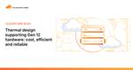

The Cloudflare Blog
https://blog.cloudflare.com
Get the latest news on how products at Cloudflare are built, technologies used, and join the teams helping to build a better Internet.
フィード
The story of web framework Hono, from the creator of Hono 9
9
The Cloudflare Blog
Hono is a web framework that is fast, lightweight, and built using the Web Standards API. Hear the story of Hono by the creator of Hono.
10時間前
Analysis of the EPYC 145% performance gain in Cloudflare Gen 12 servers
The Cloudflare Blog
Cloudflare’s Gen 12 server is the most powerful and power efficient server that we have deployed to date. Through sensitivity analysis, we found that Cloudflare workloads continue to scale with higher core count and higher CPU frequency, as well as achieving a significant boost in performance with larger L3 cache per core.
2日前
Protect against identity-based attacks by sharing Cloudflare user risk scores with Okta
The Cloudflare Blog
Uphold Zero Trust principles and protect against identity-based attacks by sharing Cloudflare user risk scores with Okta. Learn how this new integration allows your organization to mitigate risk in real time, make informed access decisions, and free up security resources with automation.
2日前

CJ Desai: Why I joined Cloudflare as President of Product and Engineering
The Cloudflare Blog
I am thrilled to embark on this journey to run Product and Engineering at Cloudflare, driving forward the mission of helping build a better Internet.
7日前
What’s new in Cloudflare One: Digital Experience (DEX) monitoring notifications and seamless access to Cloudflare Gateway with China Express
The Cloudflare Blog
This roundup blog post shares the latest new features and capabilities at Cloudflare. Learn more about new Digital Experience (DEX) monitoring notifications and seamless access to Cloudflare Gateway with China Express.
8日前
Improving platform resilience at Cloudflare through automation
The Cloudflare Blog
We realized that we need a way to automatically heal our platform from an operations perspective, and designed and built a workflow orchestration platform to provide these self-healing capabilities across our global network. We explore how this has helped us to reduce the impact on our customers due to operational issues, and the rich variety of similar problems it has empowered us to solve.
8日前
Cloudflare acquires Kivera to add simple, preventive cloud security to Cloudflare One
The Cloudflare Blog
The acquisition and integration of Kivera broadens the scope of Cloudflare’s SASE platform beyond just apps, incorporating increased cloud security through proactive configuration management of cloud services.
9日前
Leveraging Kubernetes virtual machines at Cloudflare with KubeVirt
The Cloudflare Blog
The Kubernetes team runs several multi-tenant clusters across Cloudflare’s core data centers. When multi-tenant cluster isolation is too limiting for an application, we use KubeVirt. KubeVirt is a cloud-native solution that enables our developers to run virtual machines alongside containers.
9日前

Thermal design supporting Gen 12 hardware: cool, efficient and reliable
The Cloudflare Blog
Great thermal solutions play a crucial role in hardware reliability and performance. Gen 12 servers have implemented an exhaustive thermal analysis to ensure optimal operations within a wide variety of temperature conditions and use cases. By implementing new design and control features for improved power efficiency on the compute nodes we also enabled the support of powerful accelerators to serve our customers.
10日前
Enhance your website's security with Cloudflare’s free security.txt generator
The Cloudflare Blog
Introducing Cloudflare’s free security.txt generator, empowering all users to easily create and manage their security.txt files. This feature enhances vulnerability disclosure processes, aligns with industry standards, and is integrated into the dashboard for seamless access. Strengthen your website's security today!
11日前
Patent troll Sable pays up, dedicates all its patents to the public!
The Cloudflare Blog
We’re pleased to announce that the litigation against Sable has finally concluded on terms that we believe send a strong message to patent trolls everywhere — if you bring meritless patent claims against Cloudflare, we will fight back and we will win.
15日前
How Cloudflare auto-mitigated world record 3.8 Tbps DDoS attack
The Cloudflare Blog
Over the past couple of weeks, Cloudflare's DDoS protection systems have automatically and successfully mitigated multiple hyper-volumetric L3/4 DDoS attacks exceeding 3 billion packets per second (Bpps). Our systems also automatically mitigated multiple attacks exceeding 3 terabits per second (Tbps), with the largest ones exceeding 3.65 Tbps. The scale of these attacks is unprecedented.
15日前
Impact of Verizon’s September 30 outage on Internet traffic
The Cloudflare Blog
On Monday, September 30, customers on Verizon’s mobile network in multiple cities across the United States reported experiencing a loss of connectivity. HTTP request traffic data from Verizon’s mobile ASN (AS6167) showed nominal declines across impacted cities.
17日前
Wrapping up another Birthday Week celebration
The Cloudflare Blog
Recapping all the big announcements made during 2024’s Birthday Week.
17日前
Reaffirming our commitment to free
The Cloudflare Blog
Today Cloudflare reaffirms its commitment to offering a robust Free service tier that continues to improve. We share why Free is a cornerstone of our business strategy, and how it contributes to building a better Internet.
20日前
Our container platform is in production. It has GPUs. Here’s an early look
The Cloudflare Blog
We’ve been working on something new — a platform for running containers across Cloudflare’s network. We already use it in production, for AI inference and more. Today we want to share an early look at how it’s built, why we built it, and how we use it ourselves.
20日前
Network trends and natural language: Cloudflare Radar’s new Data Explorer & AI Assistant
The Cloudflare Blog
The Cloudflare Radar Data Explorer provides a simple Web-based interface to build more complex API queries, including comparisons and filters, and visualize the results. The accompanying AI Assistant translates a user’s natural language statements or questions into the appropriate Radar API calls.
20日前
Empowering builders: introducing the Dev Alliance and Workers Launchpad Cohort #4
The Cloudflare Blog
Empowering developers with the Dev Starter Pack and Workers Cohort #4: get free or discounted access to essential developer tools and meet the latest set of incredible startups building on Cloudflare.
20日前
Advancing cybersecurity: Cloudflare implements a new bug bounty VIP program as part of CISA Pledge commitment
The Cloudflare Blog
Cloudflare strengthens its commitment to cybersecurity by joining CISA's "Secure by Design" pledge. In line with this commitment, we're enhancing our vulnerability disclosure policy by launching a VIP bug bounty program, giving top researchers early access to our products. Keep an eye out for future updates regarding Cloudflare's CISA pledge as we work together to shape a safer digital future.
20日前
AI Everywhere with the WAF Rule Builder Assistant, Cloudflare Radar AI Insights, and updated AI bot protection
The Cloudflare Blog
This year for Cloudflare’s birthday, we’ve extended our AI Assistant capabilities to help you build new WAF rules, added new AI bot & crawler traffic insights to Radar, and given customers new AI bot blocking capabilities
20日前